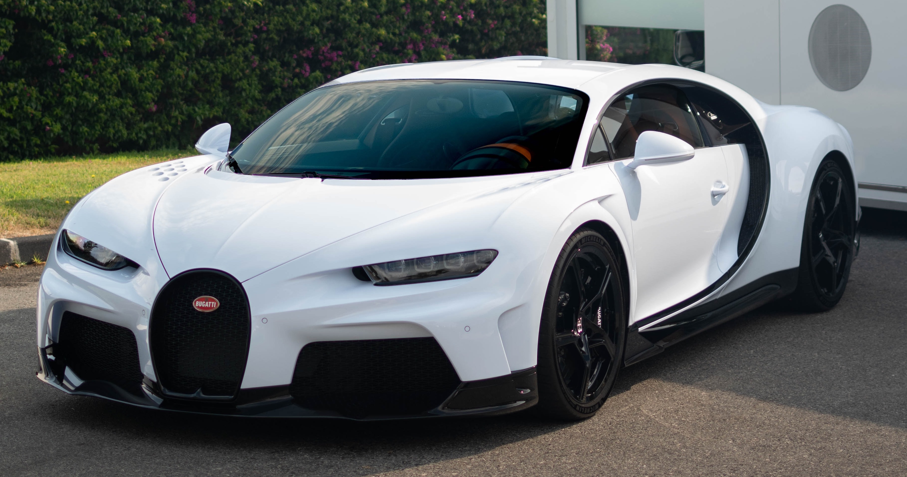

Sports Cars
A sports car is a car designed with an emphasis on dynamic performance, such as handling, acceleration, top speed, or thrill of driving. Sports cars originated in Europe in the early 1900s and are currently produced by many manufacturers around the world. There are typically four distinct categories that people mistakably consider all of which to be “sports cars”: Sports Car, High-Performance Sports Car, Supercar, and Hypercar.
Actual Sports Cars
The performance of a sports car exceeds that of typical passenger vehicles. Most are constructed of traditional building materials such as steel and aluminum to keep costs within a specific price range. Production is on an automated production line and volumes are typically limited only by demand. Sports cars characteristically accelerate from 0-60 in fewer than 6.0 seconds with top speeds in excess of 150 mph. Ride quality and passenger comfort is paramount – performance is secondary – as most sports cars are primary vehicles used as daily drivers. Sports cars are typically priced above $35,000.

High-Performance Sports Cars
The performance of high-performance sports cars exceeds that of sports cars and the vehicles are generally capable of driving on a racing track without modifications. Most are constructed of traditional building materials such as steel and aluminum, but weight is a consideration. Production is primarily on an automated productions line and volumes are typically limited only by demand. High-performance sports cars typically accelerate from 0-60 in fewer than 5.0 seconds with top speeds in excess of 165 mph. Reduced sound deadening (to lower weight) means these vehicles are often less comfortable than standard sports cars, but ride quality and passenger luxury is still crucial – most high-performance sports cars are fitted with adaptive suspension systems to improve the ride. High-performance sports cars, which are usually “third vehicles” in the household, are typically priced above $75,000.
Supercars
The performance of supercars is best explored on racing circuits by talented drivers. Most supercars are constructed with lightweight alloys and expensive composites to reduce mass. Production is on an assembly line, but much of the process is accomplished by hand. Production volumes are often limited to fewer than 1,500 units. Supercars deliver extraordinary performance that includes acceleration from 0-60 in fewer than 3.5 seconds and top speeds in excess of 200 mph. Luxury and passenger comfort is significantly reduced as performance is vital in a supercar – adaptive suspensions are tuned to optimize handling, not ride quality. Supercars, which are most often garaged and driven only on weekends, are typically priced above $200,000.
Hypercars
The performance of hypercars mirrors (and often exceeds) dedicated race cars – to explore it requires professional skill levels and a racing circuit. Hypercars are constructed of expensive exotic materials to keep weight to an absolute minimum. Manufacturing and assembly are accomplished by hand, and production volumes are typically limited to fewer than 100 units. With powerful hand-built engines and astonishing levels of grip, hypercars accelerate from 0-60 in fewer than 3.0 seconds, corner in excess of 1 G, and deliver top speeds in excess of 230 mph. While these vehicles are often fitted with premium cabin materials, outright performance is paramount – comfort is forfeited by form-fitting bucket seats and reduced outward vision – these are not daily drivers. Hypercars, which are often part of a very affluent owner’s museum-quality car collection, are typically priced above $1,000,000.
